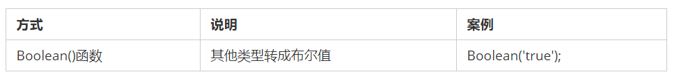
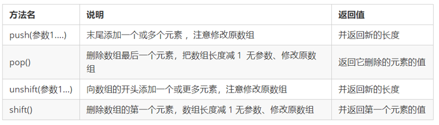
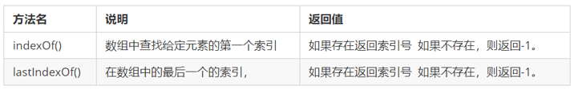

初始JavaScript
JavaScript 是什么

- JavaScript 是世界上最流行的语言之一，是一种运行在客户端的脚本语言 （Script 是脚本的意思）
- 脚本语言：不需要编译，运行过程中由 js 解释器( js 引擎）逐行来进行解释并执行
- 现在也可以基于 Node.js 技术进行服务器端编程

JavaScript的作用
- 表单动态校验（密码强度检测） （ JS 产生最初的目的 ）
- 网页特效
- 服务端开发(Node.js)
- 桌面程序(Electron)
- App(Cordova)
- 控制硬件-物联网(Ruff)
- 游戏开发(cocos2d-js)
HTML/CSS/JS 的关系

浏览器执行 JS 简介
浏览器分成两部分：渲染引擎和 JS 引擎

浏览器本身并不会执行JS代码，而是通过内置 JavaScript 引擎(解释器) 来执行 JS 代码 。JS 引擎执行代码时逐行解释每一句源码（转换为机器语言），然后由计算机去执行，所以 JavaScript 语言归为脚本语言，会逐行解释执行。

JS 的组成

ECMAScript
ECMAScript是由ECMA国际（ 原欧洲计算机制造商协会）进行标准化的一门编程语言，这种语言在万维网上应用广泛，它往往被称为JavaScript或JScript，但实际上后两者是ECMAScript语言的实现和扩展。

ECMAScript：规定了JS的编程语法和基础核心知识，是所有浏览器厂商共同遵守的一套JS语法工业标准。
更多参看MDN:MDN手册DOM——文档对象模型
文档对象模型（DocumentObject Model，简称DOM），是W3C组织推荐的处理可扩展标记语言的标准编程接口。通过 DOM 提供的接口可以对页面上的各种元素进行操作（大小、位置、颜色等）
BOM——浏览器对象模型
浏览器对象模型(Browser Object Model，简称BOM) 是指浏览器对象模型，它提供了独立于内容的、可以与浏览器窗口进行互动的对象结构。通过BOM可以操作浏览器窗口，比如弹出框、控制浏览器跳转、获取分辨率等。
JS 初体验
JS 有3种书写位置，分别为行内、内嵌和外部。
行内式
1
<input type="button" value="点我试试" onclick="alert('Hello World')" />
- 可以将单行或少量 JS 代码写在HTML标签的事件属性中（以 on 开头的属性），如：onclick
- 注意单双引号的使用：在HTML中我们推荐使用双引号, JS 中我们推荐使用单引号
- 可读性差， 在html中编写JS大量代码时，不方便阅读；
- 引号易错，引号多层嵌套匹配时，非常容易弄混；
- 特殊情况下使用
内嵌式
1
2
3<script>
alert('Hello World~!');
</script>- 可以将多行JS代码写到 script 标签中
- 内嵌 JS 是学习时常用的方式
外部JS文件
1
<script src="my.js"></script>
- 利于HTML页面代码结构化，把大段 JS代码独立到 HTML 页面之外，既美观，也方便文件级别的复用
- 引用外部 JS文件的 script 标签中间不可以写代码
- 适合于JS 代码量比较大的情况
JavaScript注释
单行注释
为了提高代码的可读性，JS与CSS一样，也提供了注释功能。JS中的注释主要有两种，分别是 单行注释 和 多行注释。
单行注释的注释方式如下：用来注释单行文字（ 快捷键 ctrl + / ）
1
// 我是一行文字，不想被 JS引擎 执行，所以 注释起来
多行注释
多行注释的注释方式如下：用来注释多行文字（ 默认快捷键 alt + shift + a ）
1
2
3
4/*
获取用户年龄和姓名
并通过提示框显示出来
*/
快捷键修改为： ctrl + shift + /
vscode → 首选项按钮 → 键盘快捷方式 → 查找 原来的快捷键 → 修改为新的快捷键 → 回车确认
JavaScript输入输出语句
为了方便信息的输入输出，JS中提供了一些输入输出语句，其常用的语句如下：
| 方法 | 说明 | 归属 |
|---|---|---|
| alert(msg) | 浏览器弹出警示框 | 浏览器 |
| console.log(msg) | 浏览器控制台打印输出信息 | 浏览器 |
| prompt(info) | 浏览器弹出输入框，用户可以输入 | 浏览器 |
注意：alert() 主要用来显示消息给用户，console.log() 用来给程序员自己看运行时的消息。
变量的概念
什么是变量
白话：变量就是一个装东西的盒子。
通俗：变量是用于存放数据的容器。 我们通过 变量名 获取数据，甚至数据可以修改。

变量在内存中的存储
本质：变量是程序在内存中申请的一块用来存放数据的空间。类似我们酒店的房间，一个房间就可以看做是一个变量。

变量的使用
- 变量的声明
- 变量的赋值
声明变量
1 | // 声明变量 |
var是一个 JS关键字，用来声明变量( variable 变量的意思 )。使用该关键字声明变量后，计算机会自动为变量分配内存空间，不需要程序员管age是程序员定义的变量名，我们要通过变量名来访问内存中分配的空间
赋值
1 | age = 10; // 给 age 这个变量赋值为 10 |
=用来把右边的值赋给左边的变量空间中 此处代表赋值的意思- 变量值是程序员保存到变量空间里的值
变量的初始化
1 | var age = 18; // 声明变量同时赋值为 18 |
变量语法扩展
更新变量
一个变量被重新复赋值后，它原有的值就会被覆盖，变量值将以最后一次赋的值为准。1
2
3var age = 18;
age = 81; // 最后的结果就是81因为18 被覆盖掉了同时声明多个变量
同时声明多个变量时，只需要写一个 var， 多个变量名之间使用英文逗号隔开。1
var age = 10, name = 'zs', sex = 2;
声明变量特殊情况
情况 说明 结果 var age ; console.log (age); 只声明 不赋值 undefined console.log(age) 不声明 不赋值 直接使用 报错 age = 10; console.log (age); 不声明 只赋值 10
变量命名规范
规则：
- 由字母(A-Za-z)、数字(0-9)、下划线(_)、美元符号( $ )组成，如：usrAge, num01, _name
- 严格区分大小写。var app; 和 var App; 是两个变量
- 不能 以数字开头。 18age 是错误的
- 不能 是关键字、保留字。例如：var、for、while
- 变量名必须有意义。 MMD BBD nl → age
- 遵守驼峰命名法。首字母小写，后面单词的首字母需要大写。myFirstNam